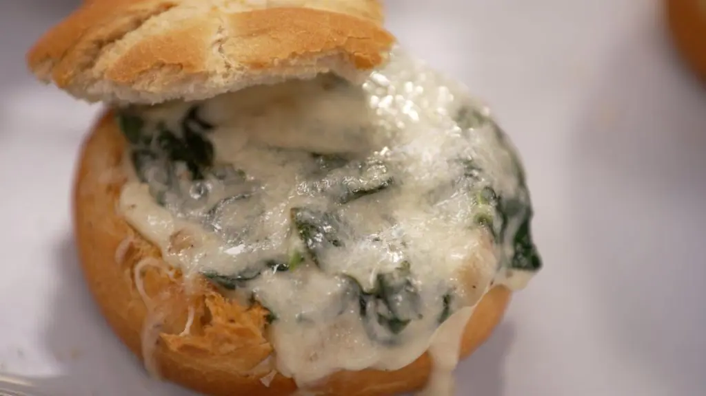

Pan relleno de cremoso de espinacas

Aprende a preparar esta receta de Pan relleno de cremoso de espinacas, por Julius Bienert
Ingredientes
- Panecillos individuales redondos
- Espinacas frescas
- Harina
- Mantequilla
- Leche
- Piñones
- Panceta ahumada
- Queso Idiazabal Ahumado
- Nuez moscada
- Pimienta negra y sal
Preparación de la Receta
- Comenzamos picando en trozos la panceta y la doramos en una sartén caliente.
- Hacemos lo mismo con los piñones y las espinacas. Reservamos en un plato.
- En esa misma sartén ponemos la mantequilla y tostamos la harina.
- Cuando la harina tenga un color dorado, incorporamos la leche y mezclamos bien hasta que la bechamel esté bien ligada.
- Incorporamos la panceta, los piñones y las espinacas y hervimos durante 3 minutos.
- Abrimos los panecillos individuales y vaciamos ligeramente el interior.
- Rellenamos con las espinacas a la crema y ponemos queso rallado encima.
- Horneamos a 220ºC unos 5 minutos hasta que dore.
Volver